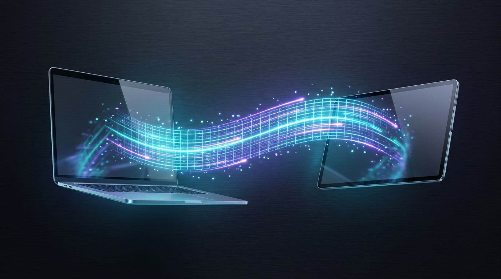

Turn Your Android Tablet Into a
120Hz Pro Mac Display & Audio
The open-source, hardware-accelerated extended display and synchronized 48kHz stereo system audio engine for Apple Silicon & Intel Macs over Zero-ADB USB-C and 0ms FEC Wireless UDP.

Hardware Pipeline Latency Budget
Measured end-to-end presentation time from macOS desktop render to Android display scanout.
Engineered for Ultra-Low Latency
Zero-copy native frameworks, forward error correction, and unbuffered OS primitives.
Zero-ADB USB-C AOA v2
Plugging in USB-C automatically launches HyperScreen via native Android Open Accessory v2 with zero-copy kernel bulk transfers. No USB debugging or developer options required.
48kHz Stereo System Audio
Captures clean Mac system audio directly via ScreenCaptureKit and plays back with sub-10ms latency on tablet speakers using non-blocking low-latency AudioTrack streams.
AIMD Adaptive Bitrate (ABR)
Real-time RTT telemetry pings guide host-side AIMD congestion control between 8 and 55 Mbps, matched with an in-stream glassmorphic HUD showing live FPS, latency, and throughput.
0ms Forward Error Correction
MTU-sliced UDP datagrams protected by Galois Field GF(2^8) Cauchy Matrix FEC recover dropped Wi-Fi packets instantly without stalling for TCP retransmission.
240Hz Vector Cursor & S-Pen
A decoupled 240Hz 1-Euro smoothed cursor plane paired with full S-Pen / USI stylus pressure, tilt, and hover mapped to native macOS CGEvent tablet pointer events.
Live USB ↔ Wi-Fi Handover
Seamlessly promote active Wi-Fi sessions to high-speed USB-C when plugged in, and fall back to Wi-Fi if detached, all without tearing down your active Mac desktop session.
Architecture & Protocol Comparison
How HyperScreen's low-latency hardware pipeline compares to conventional display streaming architectures on 2560x1600 @ 120Hz workloads.
| Feature / Pipeline Stage | HyperScreen Pro | Standard ADB Mirroring | TCP Virtual Display Apps | Legacy Remote Desktop (VNC/RDP) |
|---|---|---|---|---|
| Pipeline Decode Latency | < 8 ms (Hardware Pipeline) | 20 – 30 ms | 35 – 50 ms | 60 – 100+ ms |
| Refresh Rates | 120Hz / 144Hz HiDPI | 60Hz (Frame Capped) | 60Hz | 30 – 60Hz (Variable) |
| USB Transport | Zero-ADB AOA v2 + Direct Loopback | Requires ADB & Developer Mode | Virtual Network Adapter | TCP Tunneling only |
| Audio Pipeline | Sub-10ms (48kHz Stereo PCM) | No Audio / Desynced | 50 – 80 ms (Buffered) | High Latency / Desynced |
| Wireless Loss Recovery | 0ms GF(2^8) Cauchy FEC | TCP retransmission drop | TCP retry stall / Head-of-line | Stall on packet drop |
| Stylus & Pointer | Pressure + Tilt + 1-Euro Filter | Basic touch / Emulated mouse | Touch only / Subscription | Standard mouse emulation |
Developer Quick Start
Build and run the complete system locally from source in seconds.
macOS Host
Package, sign, benchmark, and run the native host application:
zsh scripts/package_macos_app.sh
Android Client
Assemble the client APK with 16KB page-size NDK binaries:
cd android-client && ./gradlew assembleDebug